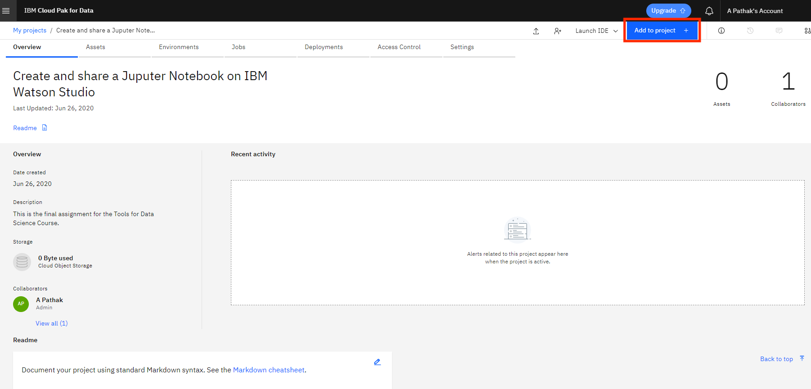
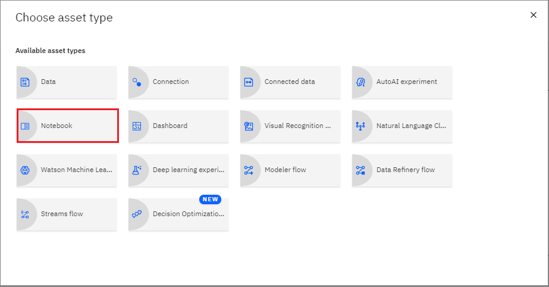
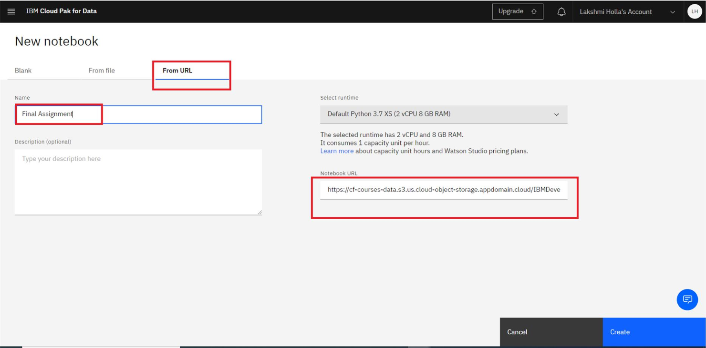
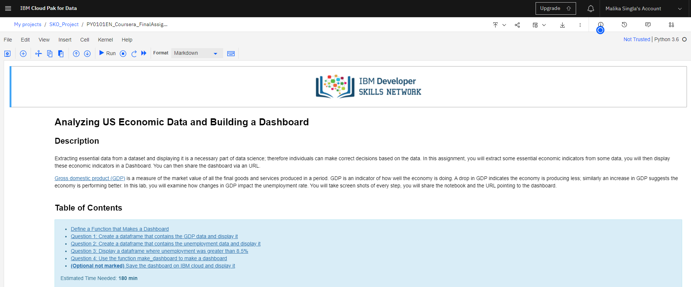

Effort: 20 mins
In this lab, you will learn:
Import a Jupyter notebook in a Watson Studio Project
Perform the tasks in the Jupyter notebook
If you have not created a Watson service and added a project in it, before proceeding with this lab please ensure you complete the previous lab: https://cf-courses-data.s3.us.cloud-object-storage.appdomain.cloud/IBMDeveloperSkillsNetwork-PY0101EN-SkillsNetwork/labs/FinalModule_Coursera/IBM_Cloud_and_Watson_Setup.md.html
You need to add a Notebook to your project. Click Add to project.

In the list of asset types, click Notebook:

Note: Select the default Python as selected language.
On the New Notebook page, enter a name for the notebook, and then click From URL.
Paste the URL you copied from the previous reading in the course into the Notebook URL box, and then click Create Notebook.

You will see a Notebook like this (the actual notebook may be different from the one shown in the screenshot below):

| Date | Version | Changed by | Change Description |
|---|---|---|---|
| 2021-01-25 | 2.3 | Rav Ahuja | Forked from original and removed hard coded notebook link |
| 2020-11-18 | 2.2 | Malika Singla | Updated the screenshot |
| 2020-10-05 | 2.1 | Malika Singla | Updated the Effort and Objective |
| 2020-09-05 | 2.0 | Malika Singla | Updated the screenshot |